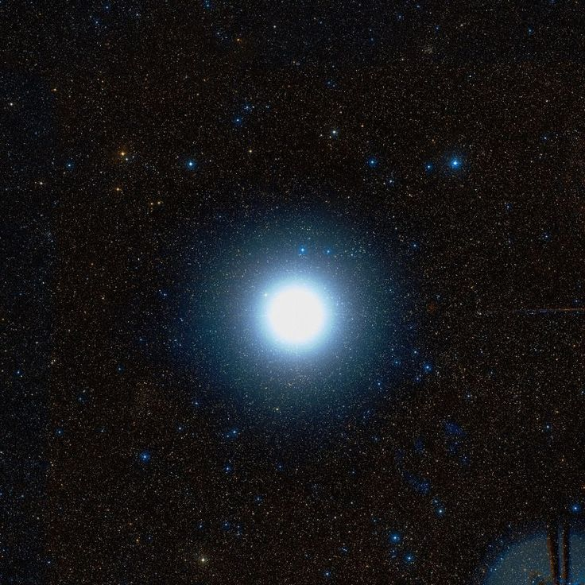
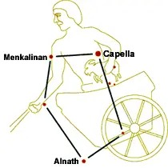

Capella

Vejamos o caso de Capella, a estrela mais brilhante de Auriga, o Cocheiro.
A constelação do Cocheiro representa um homem que tem na mão direita um chicote,
enquanto a mão esquerda segura (em algumas ilustrações, sustenta nas costas) uma pequena cabra:
é Capella, nome que significa cabrita. CABRITA (Capella) é a estrela Alfa da constelação do Cocheiro.
Na mitologia greco-romana, Capella é Amaltéa, uma ninfa filha do rei de Creta que cuidou de Júpiter
quando ele ainda era bebê e se refugiava da voracidade de seu pai, Saturno, que queria devorá-lo.
Segundo outra versão, Capella é a própria cabra que amamentou Júpiter naquela ocasião.

A estrela Capella fica a cerca de 42 anos luz de distância. O Sol fica a 8 minutos-luz de nós, mas
Capella é 150 vezes mais brilhante que o Sol. Ela está entre as “Dez Mais” do céu, figurando na sexta
posição no ranking das mais brilhantes. Facilmente visível a olho nu entre as constelações de Touros
e Gêmeos, o pontinho de luz de Capella parece querer dizer que vemos apenas um astro. Mas é apenas um
disfarce. Capella é uma componente de um sistema formado por duas estrelas gigantes e amarelas,
com massas 2,6 e 2,7 vezes a massa do Sol (uma delas é 9 vezes maior que o Sol e a outra é 12 vezes maior).
Elas se movem uma em torno da outra a meros 113 milhões de km (menos que a distância da Terra ao Sol).
Desenvolvedoras:
MARIA LUIZA GONÇALVES PEREIRA
NICOLY RILLARY BRITO DA SILVA